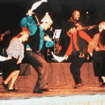

Chiloé es una de las regiones más ricas de Chile, en cuanto a folclor, y por ello ocupa un lugar de privilegio dentro de las expesiones que
se dan en la zona sur. Su particular situación geográfica, su clima y la vigencia de la raza indígena Huilliche que coexiste con la más pura
tradición española, han producido una diversidad de manifestaciones folclóricas.
Cueca chilota
La principal característica es la ausencia de la cuarteta o copla inicial. El cantor, en este caso, se limita a repetir los versos de la seguidilla, a manera de cueca larga hasta completar cuatro o cinco versos.

Sirilla
Es una de las danzas más antigua de Chiloé, descendiente directa de la seguidilla española. Aún se la baila en la isla grande y su ágil ritmo en la guitarra suele ser acompañado de bombo y caja. Su paso arrastrado y a veces golpeadito, persiste a través de toda la danza con una intención viva de fiesta.
Volver al Menu